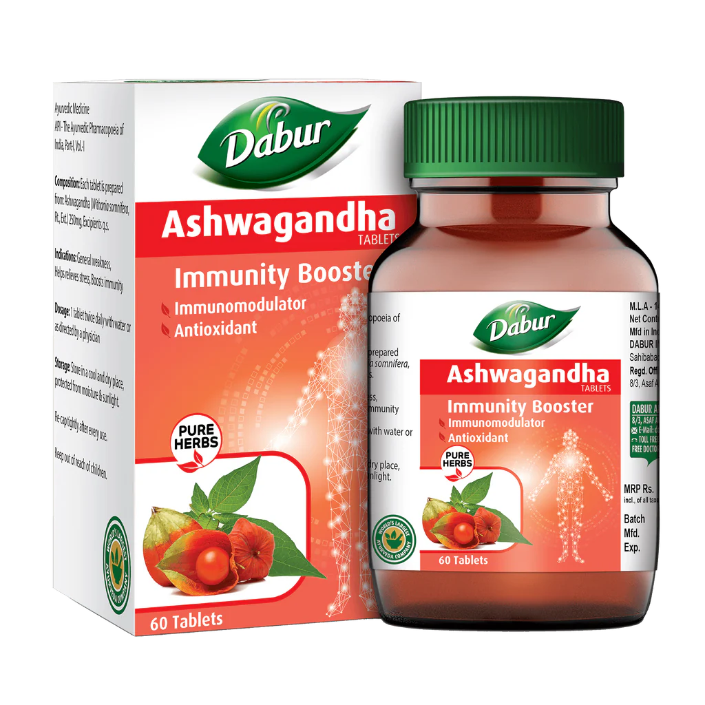
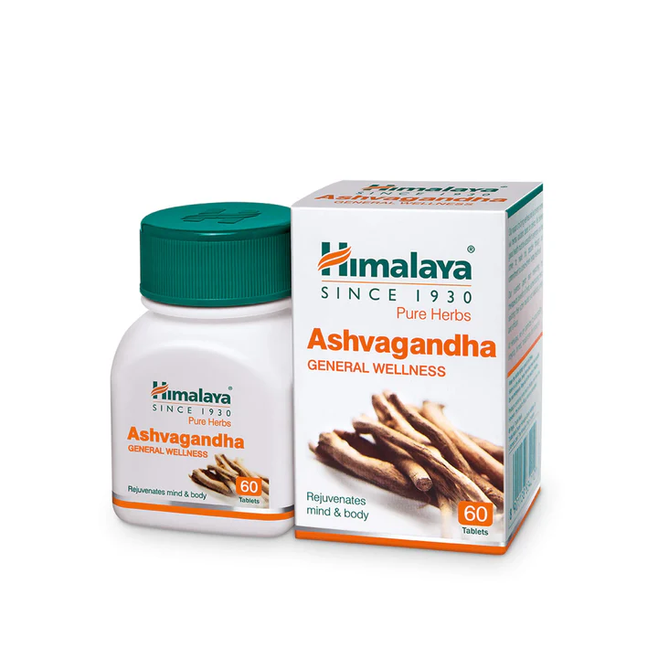

.jpg)
Balances kapha and vata.
Read more about various ailments, it's causes, symptoms, ayurvedic treatments, etc.


Aswagandha Benefits & Medicinal Uses
1. Helps Fight Depression
Ashwagandha might prove useful in reducing depression levels.
2. Treats Erectile Dysfunction
Ashwagandha is good for boosting the libido in men and can be used in
the formulation of medicine for erectile dysfunction (ED).
3. Increases Muscle Mass
Ashwagandha has been found to be useful in improving the muscle mass,
body composition & overall strength.
4.Increase Fertility in Men
Ashwagandha uses also include increasing sperm count & motility.
It helps increase testosterone levels
and significantly boosts sperm quality and fertility in men
5. Controls Diabetes
One of the Ashwagandha benefits is to control diabetes.
Ashwagandha stimulates the pancreas to secrete insulin which helps
lower blood sugar levels and hence control diabetes.
6. Enhances Memory
Ashwagandha supplements may improve brain function,
memory & reaction times.
7. Helps reduce Stress & Anxiety
Ashwagandha has been scientifically proven to reduce stress and anxiety.
Withania Somnifera helps reduce Cortisol also known as stress hormone
which is released by the adrenal glands in response to stress.
8. Boosts Immunity
Studies have shown that consumption of Ashwagandha helps boost immunity.
Withania Somnifera also helps improve white blood cells & red blood cells.
9. Antibacterial Properties
Ashwagandha has proven antibacterial properties.
Withania Somnifera helps to prevent bacterial infections.
10. Lowers Cholesterol
Ashwagandha health benefits also include improving heart health
by lowering cholesterol.
11. Boots Thyroid function
Ashwagandha may be able to benefit people with low thyroid function since
animal studies show that it has a thyroid hormone balancing effect. Withania
Somnifera root extract if given on a daily basis,
can increase the secretion of thyroid hormones.
TABLETS
 